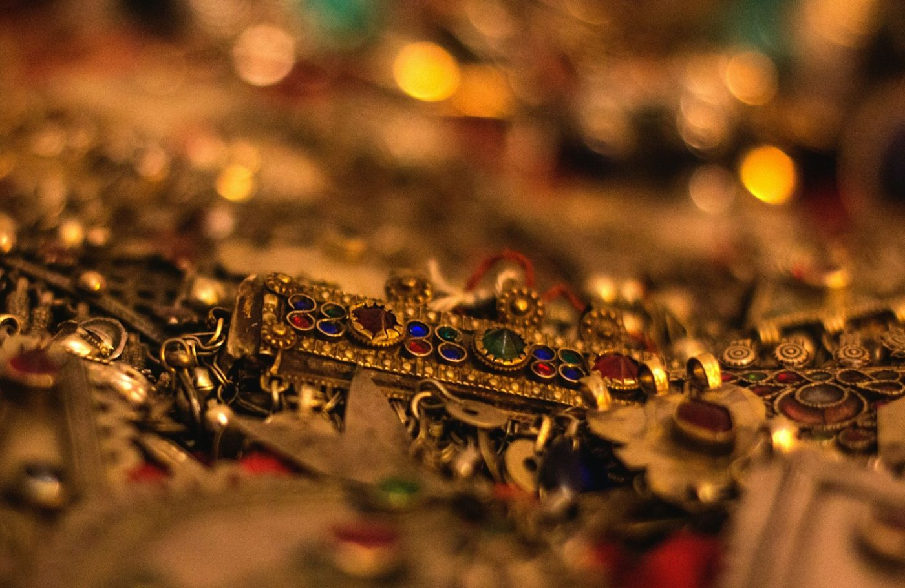
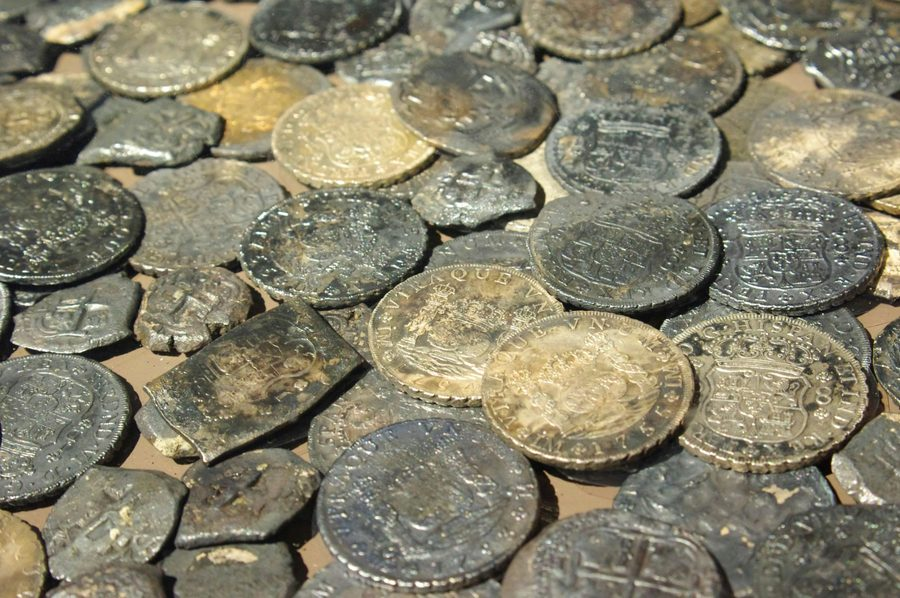
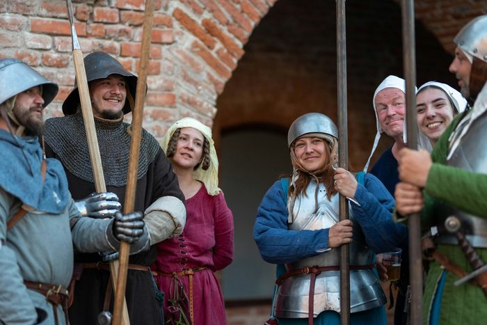
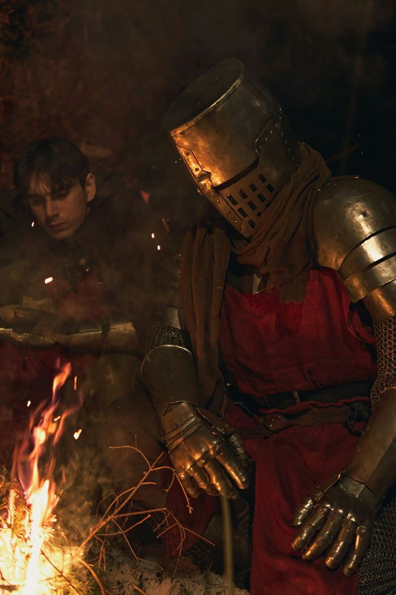
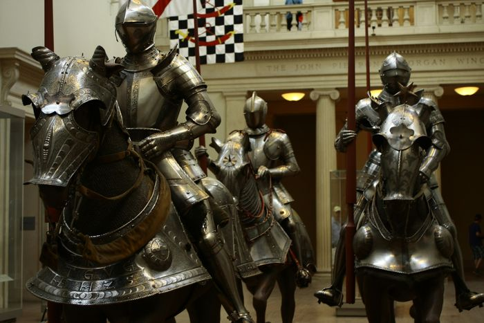
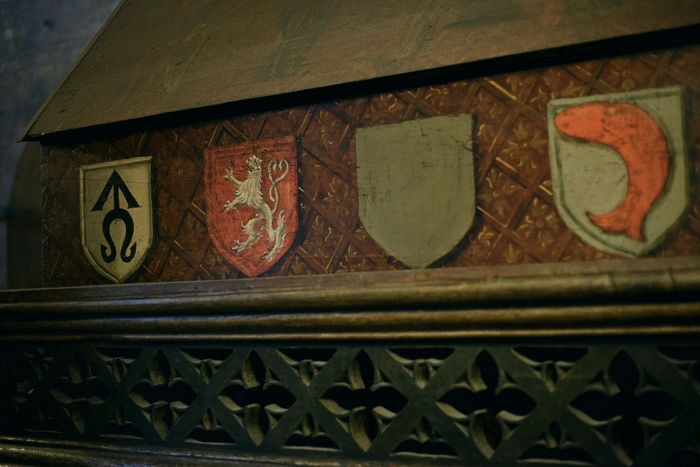
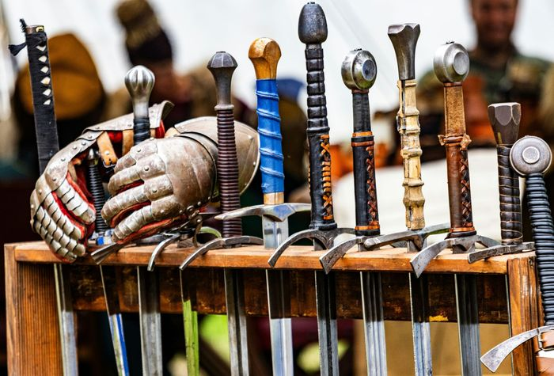
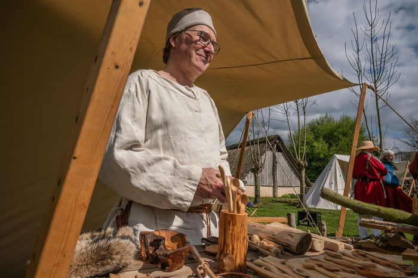

Ogre Chips


There are all sorts of ways to help make Fantasy Alive a fun and exciting game for yourself and others. When you take on some extra effort to contribute to the smooth running of the game, Fantasy Alive wants to reward that extra effort with Ogre Chips, sometimes called 'OC'. Ogre Chips are a kind of coupon which can be exchanged for some in-game advantages.
In general, people earn Ogre Chips by doing things like helping people get to game by giving them a ride, taking on marshal roles in the game (like acting as a rules, weapon, or armour marshal), helping to set up or clean up before and after game, and donating to the game props, costume pieces, or equipment. Ogre Chips don't have monetary value, but they can also be purchased from the game at the rate of $1 CAD per Ogre Chip.

Ogre Chips can be used at any Endless Adventures Ontario game. At Fantasy Alive, you can use Ogre Chips to:
Gain additional in-game coin. You can exchange up to 100 OC per event attended, at a rate of 1 OC per 1 Silver Piece (10 copper coins).
Gain additional experience points. You can exchange up to 100 OC per event attended, at a rate of 1 OC per XP. Depending on how experienced your character is, this can help your character to grow faster, and be better able to tackle the challenges that they'll face in-play.
Buy a skill. You can purchase a single skill every event, using OC to make up for any XP that you don't currently have on your character sheet.
Start a new character at higher build. A new character can start with up to 80 build points, if they have OC that can be exchanged for XP. This can help give new characters a leg up in game – and undertaking some roles to help the game run more smoothly can raise this cap.
At some points, you may also find that the game offers short-term opportunities for Ogre Chips to be used in other ways. This is always optional, but it can be rewarding to use your Ogre Chips in these ways when these opportunities present themselves.
Ogre Chips are a reward for helping to make the game a more interesting place. This is a short, non-exhaustive list of ways that can help you to earn Ogre Chips.

Spend time as a non-player character. Whether it's an NPC shift in the course of play, NPCing for an entire event, or even volunteering as 'permacast' to NPC for an entire season, NPCs help to fill out the world of Fantasy Alive with people and monsters, making the world come alive.

Take on a marshal role. Our plot marshals guide the stories that are told in our setting. Our rules marshals help to determine how the rules of play apply in any given situation. Weapons and armour marshals help to keep everyone safe, and similar roles, like our new player representatives, character history marshals, and other, comparable roles, all help to make sure that the game functions well and safely.

Drive people to and from events. Transportation to site can be a difficult hurdle for some players to overcome, and carpooling helps to save gas and the environment. If you're driving someone to or from an event, let us know – we're happy to reward that with some OC.

Help to set up or take down decorations, or clean up. Set-up and take-down can be time consuming and dusty work. Helping to make sure that we keep a good relationship with our hosts by leaving the site clean and ready for the next group to rent it is always appreciated.

Donating props, costumes, or equipment. While the game of Fantasy Alive does purchase and make its own materials, there are times when we will ask for specific props, costume pieces, or so forth, to help the game look great and feel immersive. If you have something that you can spare that fits the bill, or the skills to make it, the game will reward this with OC on a case-by-case basis. While we appreciate all generous intentions, please know that the game only needs certain pieces – ask before bringing stuff out.

Helping with promotion. We show up at cons and faires to tell people about our game. Show up with us – help us to recruit new players and storytellers so that the adventure can continue.
Using other skills (as applicable). Maybe you have a gift for art or the skills of a webmaster. The diverse community of Fantasy Alive contains multitudes, and having people willing to give up some of their time and expertise can help the game in ways too varied to simply list here.